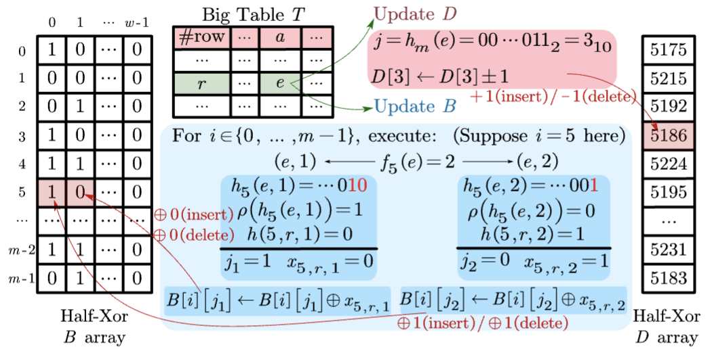

Biography
I am a 1st year Ph.D. student at MMLab of The Chinese University of Hong Kong, supervised by Prof. Dahua Lin.My current research focuses on:
◆ Multi-modal Learning
◆ Vision-Language Model
I am always open to discussions and collaborations. 😃
👇 Feel free to drop me an email if you are interested in !
Email: lijinsong0130@gmail.com WeChat: Jinsong0130
Google Scholar Github X/Twitter Linkedin
Education
 |
The Chinese University of Hong Kong
Aug, 2024 - Jul, 2028 (Expected) Ph.D. in Information Engineering Advisor: Prof. Dahua Lin |
 |
Xi'an Jiaotong University
Aug, 2020 - Jun, 2024 B.E. in Computer Science and Technology GPA: 91/100 (Top 1.5%) |
Publications 
( * equal contribution, † corresponding authors )
(Co-)First Author Publications
 |
ShareGPT4Video: Improving Video Understanding and Generation with Better Captions
Lin Chen*, Xilin Wei*, Jinsong Li*, Xiaoyi Dong, Pan Zhang, Yuhang Zang, Zehui Chen, Haodong Duan, Bin Lin, Zhenyu Tang, Li Yuan, Yu Qiao, Dahua Lin, Feng Zhao†, Jiaqi Wang† NeurIPS 2024 (D&B Track) | Paper | Project Page |  | |

|
 |
Are We on the Right Way for Evaluating Large Vision-Language Models?
Lin Chen*, Jinsong Li*, Xiaoyi Dong, Pan Zhang, Yuhang Zang, Zehui Chen, Haodong Duan, Jiaqi Wang†, Yu Qiao, Dahua Lin, Feng Zhao† NeurIPS 2024 | Paper | Project Page |  | |

|
 |
ShareGPT4V: Improving Large Multi-modal Models with Better Captions
Lin Chen*, Jinsong Li*, Xiaoyi Dong, Pan Zhang, Conghui He, Jiaqi Wang, Feng Zhao†, Dahua Lin† ECCV 2024 | Paper | Project Page |  | |

|
Co-Author Publications
|  |
Half-Xor: A Fully-Dynamic Sketch for Estimating the Number of Distinct Values in Big Tables
Pinghui Wang†, Dongdong Xie, Junzhou Zhao, Jinsong Li, Zhicheng Li, Rundong Li, Yang Ren TKDE 2024 | Paper |  | |

|
Selected Awards
| ◆ NeurIPS Scholar Award, NeurIPS Foundation | 2024 |
| ◆ Postgraduate Studentship Award, The Chinese University of Hong Kong | 2024 - 2028 |
| ◆ Outstanding Graduate, Xi'an Jiaotong University | 2024 |
| ◆ National 1st Prize, RoboCup China Open | 2022 |
| ◆ National Scholarship × 2, Ministry of Education of the People's Republic of China | 2021, 2022 |
| ◆ Outstanding Student Award × 3, Xi'an Jiaotong University | 2021, 2022, 2023 |
Selected Experiences
 |
Shanghai AI Laboratory
Aug, 2023 - Present Research Intern ( Topic: Large Multi-modal Model ) Supervised by Dr. Jiaqi Wang |
Selected Services
Conference Reviewer| ◆ CVPR 2025 |
| ◆ ENGG1110B Problem Solving by Programming, The Chinese University of Hong Kong | 2024 Fall |
| ◆ CS002, Xi'an Jiaotong University | Aug, 2021 - Jun, 2024 |